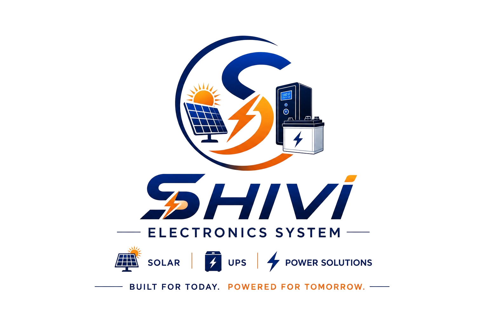

Downtime means something different in a hospital than in a warehouse. We match system topology and backup time to the actual risk profile of your sector.
A single voltage sag can freeze a billing counter mid-transaction or drop a cold-storage compressor for hours before anyone notices. Multi-outlet chains also need the same setup to be repeatable across dozens of sites without a custom design each time.
We pair a servo voltage stabilizer with a compact single-phase online UPS at each counter — enough runtime to close the current bill and shut down clean, plus surge protection for CCTV/DVR racks that run unattended overnight.
Recommended: Alpha Series Online UPS →Life-support systems, ventilators and imaging equipment can't tolerate even a momentary transfer gap — the switch from mains to backup has to be instant and the output waveform has to stay clean, or sensitive electronics inside the equipment take the hit over time.
Our DSP-based double-conversion topology means the load never actually "switches" — it's always running off the inverter, so mains dropout is invisible downstream. Precision stabilizers ahead of imaging equipment hold voltage within the tight band diagnostic-grade hardware expects.
Recommended: Beta Series Online UPS →Tower and exchange sites are often the last to get grid power restored, and a service call to a remote location isn't something you want to make twice a month. Extended outages, not just brief dips, are the real design problem here.
We size the battery bank for hours of runtime, not minutes, and pick high-cycle VRLA or tubular batteries built for the daily charge/discharge pattern that off-grid and unstable-grid sites put them through.
Recommended: VRLA / SMF Battery →Large motors and welding loads starting up on the same line as your PLCs and SCADA panels cause exactly the kind of voltage sag and surge that resets control electronics — usually mid-production run, which is the most expensive time for it to happen.
Heavy-duty oil-cooled stabilizers absorb that swing before it reaches sensitive control panels, while a modular online UPS keeps PLCs and HMIs running through the sag entirely rather than just surviving it.
Recommended: 3-Phase Oil-Cooled Stabilizer →An uptime SLA is only as good as the single point of failure hiding behind it — a UPS that has to go fully offline for maintenance or a fault is that point. Colocation racks and server rooms need redundancy built into the power path itself, not just backup for it.
N+1 modular UPS architecture lets one module be pulled for maintenance without dropping load, and continuous battery-health monitoring flags a failing string before it becomes an outage instead of after.
Recommended: Gama Series Online UPS →A large-format press or binder draws several times its running current for a second or two at startup — a spike an undersized stabilizer either can't correct fast enough or trips out on entirely, stalling the print run.
We size the stabilizer's correction speed and overload headroom around that inrush specifically, so press lines and finishing equipment start clean every time instead of tripping the first stabilizer that looked adequate on paper.
Recommended: Servo Voltage Stabilizer →Line-interactive UPS systems have a switching delay measured in milliseconds — invisible to most equipment, but long enough to drop a frame or glitch audio on an on-air feed. For a live broadcast, that's the one failure mode with no acceptable frequency.
True online double-conversion means the transmission chain is always running off the inverter, with mains as the backup rather than the other way round — so a grid dropout during a live segment simply doesn't reach the feed.
Recommended: Gama Series Online UPS →A lift stuck mid-floor on a power cut is a safety issue and a guest complaint in one, and it's usually the highest-visibility failure a hotel or mall can have — right in front of the people you're trying to impress.
A dedicated lift backup inverter with auto-rescue brings the car to the nearest floor and opens the doors on mains failure, while stabilized power for HVAC controls and common-area systems keeps the rest of the building running normally through the same outage.
Recommended: Lift Backup Inverter →We size custom power protection for almost any critical-load environment.